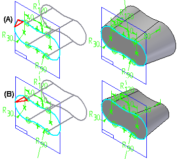
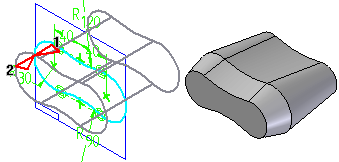
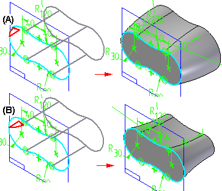
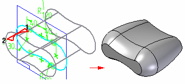

Applying Draft Angle and Crowning to Features
When constructing molded or cast parts, draft angle or crown properties are often added to improve the appearance and physical properties of the finished part, and to make the part easier to remove from the mold.
The Protrusion, Cutout, and Extruded Surface commands allow you to apply draft angle or crowning to the faces on the feature that are defined by profile elements.

You define draft or crown properties for a feature using the Treatment Step on the command bar. The No Treatment, Draft, and Crown buttons available in the Treatment Step allow you to specify which treatment option you want to use.
You cannot define both draft and crown parameters for a single feature.
Defining Draft Angle
When you click the Draft button on the command bar, options are displayed so you can define the draft angle and direction you want. You can use the Flip button to define the draft direction you want. A graphic image (A) is displayed adjacent to the feature to help you determine how the draft will be applied. When you click the Flip button, the graphic image updates (B).

When you define a Symmetric or Non-Symmetric extent, you can define individual draft parameters for both extent directions.

Defining Crown Parameters
When you click the Crown button on the command bar, you can use the Crown Parameters dialog box to specify the Crown Type and the crown parameter values you want. You can specify the following Crown Type options:
-
No Crown
-
Radius
-
Radius and Takeoff
-
Offset
-
Offset and Takeoff
Depending on the option you specify, dimensions are added for the radius, takeoff, and offset values. You can edit the dimensional values using the Crown Parameters dialog box, the Variable Table, or by selecting the dimensions with the cursor.
The Flip Side and Flip Curvature options on the dialog box let you adjust the curvature direction and side to get the result you want. A graphic image (A) is displayed adjacent to the feature to help you determine how the crown will be applied. When you click the Flip Curvature and Flip Side buttons, the graphic image updates (B).

When you define a Symmetric or Non-Symmetric extent, you can define individual crown parameters for both extent directions.
